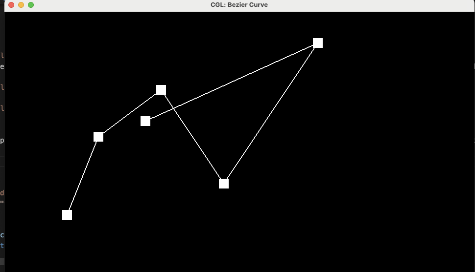
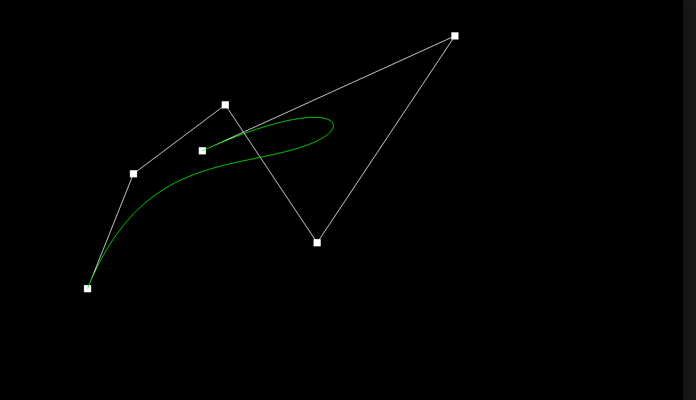
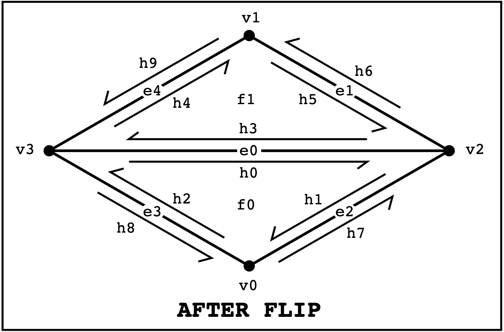
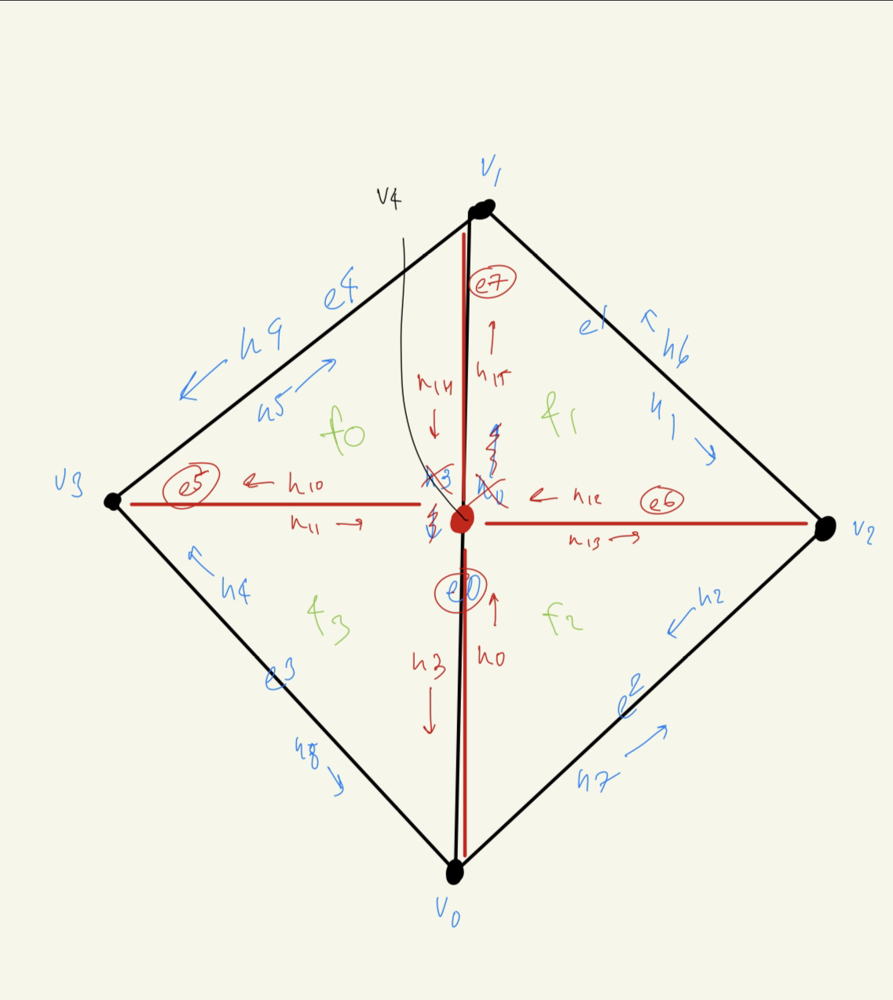

Overview
In this project, we have created a system to support 3D meshes using triangles represented by a half-edge data structure and support curves and surfaces in 2D/3D using bezier curves and its associated algorithms.
Section I: Bezier Curves and Surfaces
Part 1: Bezier Curves with 1D de Casteljau Subdivision
Here, we are implementing one recursive step within the 1D Casteljau Subdivision algorithm. We have a list of vectors representing points on a plane, so for each iteration, we need to perform a linear interpolation on 2 points, which become one interpolated point. At the end of the algorithm, we will have a final point that lies on the bezier curve.
Lets break down de Casteljau's algorithm. First, we begin with a set of n points, that we define how our bezier curve looks. Then, we take 2 points from the set and perform a linear interpolation between them, giving us one point back, so in each iteration of the algorithm, we will have one less point from the set of points. We will repeat this until we get one points, which will ultimately lie on the evaluated bezier curve at parameter t. Parameter t is ranges from 0 to 1 where 0 corresponds to the first control point and 1 corresponds to the last point. With this parameter, we can construct a sequence of points that will represent our final bezier curve.
|

|
|
|
|
|
|
|
|
|

|
|
Part 2: Bezier Surfaces with Separable 1D de Casteljau
We can also use de Casteljau's algorithm to extend calcuting 2D bezier curves to 3D bezier surfaces. Here's how the implementation differs. First, instead of evaluating a list of 2D Vectors, we are now evaluating a list of 3D vectors. The recursive step stays the same, where we take 2 points out of the set of points and do a linear interpolation until we have one point left. But since we have a 3D surface, we have 2D list of 3D vectors. This means we have to perform the algorith on each row, so we have a list of points at end, using parameter u. Lastly, we run the algorithm again on this list of points using parameter v. Like for bezier curves, we arrive at a single point, which lies of the bezier surface at parameter u, v. At the end, we get a grid of points that form a bezier surface.
|
|
Section 2: Triangle Meshes and Half-Edge Data Structure
Part 1: Area-Weighted Vertex Normals
Here we implemented area-weighted normal vectors for vertices, which can be used for Phong Shading, which provides better shading for smooth surfaces over flat surfaces. To do this, we will use the halfedge data structure to loop through the halfedges, giving us access to the faces incident to these halfedges. As we loop through the halfedges, we will calculate the normal vector of the face and sum it with a 3D vector. We will continue until we have go through all of the halfedges. At the end, we will normalize the the sum of weighted normals, by returning the unit vector of the weighted 3D vector.
|
|
|
Part 2: Edge Flip
Edge flipping is a technique to adjust an existing triangle mesh by transforming a halfedge data structure. For our implementation we found a very helpful guide from CMU linked here. We followed this guide for our implementation. We are given an edge to start with, and we first we want to collect all the halfedges in the data structure by traversing it using next() and twin(). With all the halfedges collected, we can then find the associated vertices, edges, and faces. Now that we have all the pointers, we essential reassign all the pointers to transform the mesh. We then followed the diagram from the guide to match the new pointers starting with halfedges, then moving to vertices, then edges, then faces.
|
|
|
|
|

|
Part 3: Edge Split
Edge split is another remeshing technique that inserts a new vertex at the midpoint
of a pair of triangles, yielding four triangles afterward. The implementation is
similar to edge flip but we need to generate new half-edges, edges, faces, and a new
vertex.
Like before, we need to collect all the pointers using an edge, that we're
given. Then we allocated our new pointers. Then for reassign pointers, we started
with halfedges, then vertices, then edges, then faces. For the new vertex we
generated, we computed its new position by taking the midpoint of two old vertices.
Drawing out a picture of what the final pointer assignments will look like really
helped out with our implementation as it acted as our guide similar to the previous
part.
We did run into an issue where when we tried to split an edge, it would
freeze the application, but after double checking pointer assignments, we realized
the issue was that we incorrectly reassigned the outside halfedges and just had to
reuse the code for that from the previous part.
|
|

|
|
|

|
Part 4: Loop Subdivision for Mesh Upsampling
Loop subdivision allows us to convert a polygon mesh into a higher-resolution mesh for use cases
such as better display and more accurate simulation. In a previous project, we have implemented
upsampling for 2D images, but unfortunately, it does not easily translate into 3D meshes since meshes
usually have irregulars locations unlike the grid representation for 2D images. However, we can
use loop subdivision for this, which upsamples a mesh by subdividing each of its triangles into
four smaller triangles and updating vertices of subdivided mesh based on some weighting scheme.
For the implementation, we first started with looping through the vertices, and in each loop, we also
loop through the direct neighbors of that particular vertex to add the neighbor's position to a
summed 3D vector. Then we get the vertex degree, or number of edges incident to that vertex, and
calculate a constant 'u' based on the degree. With the summed vectors, degree n, and u, we can update
the position of the old vertices using this formula:
(1 - n * u) * original_position + u * original_neighbor_position_sumNext, we traverse the edges and with each edge, we get its half-edge and twin half-edge. With these two pointers, we can retrieve for vectors that we can call A, B, C, and D. These vectors will help us calculate the new position of each edge using this formula:
3/8 * (A + B) + 1/8 * (C + D)After calculating the new positions of edges and vertices, we then split every edge in the original mesh. We traverse the edges and split the edge, giving us a new vertex and halfedges. We then update the position of the new vertex, using the 3D vector we previously calculated. Then for the new vertex and its halfedges, we mark it as 'new' since we only want to iterate and split original edges.
Next, there can be cases where edges connects an old vertex to a new vertex. In this situation, weiterate over the edges and if the edge is 'new', then we check the halfedges. If any of the halfedges are new, we flip the edge to properly split everything.
Lastly, for every vertex, we copy the new vertex positions we calculated earlier to its final position. For this section, we found HW party very helpful as we were able to get both guidance on our implementation and clarifications to some of the strategies that are commented in the skeleton code for the TAs.
|
|

|
As we can observe here,